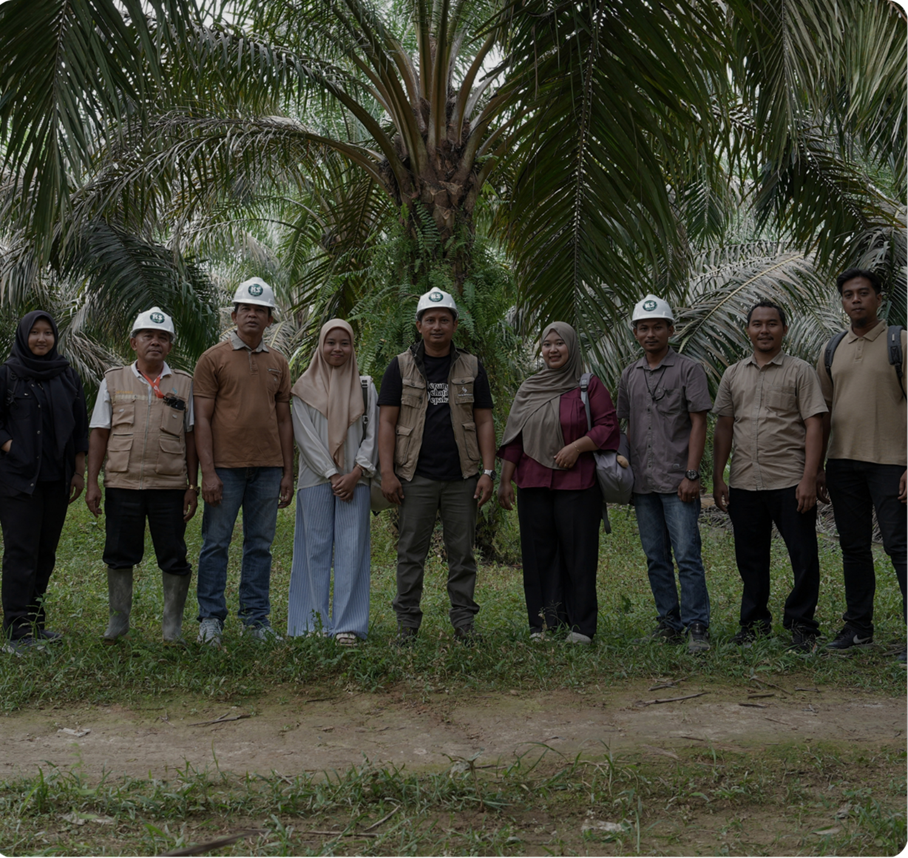

Sertifikasi bukanlah tujuan akhir. Bagi LIVE PALM, proses menuju sertifikasi menjadi kesempatan untuk membangun kelompok petani yang lebih kuat, tertata, dan mampu memberikan manfaat nyata bagi anggotanya serta bersama mewujudkan praktik pertanian yang berkelanjutan.

11
Organisasi Petani
1,900+
Petani Tersertifikasi
"Through WEI’s support, farmers received training in sustainable oil palm cultivation and established KP BERJATI as a collective platform to advocate for farmers’ welfare.”
— Suprayitno, KT Sawit Jaya
"WEI’s support taught me that farming is not only about experience, but also about continuous learning and growth. Today, I’m trusted as a Group Manager, where I can share knowledge and support other farmers.”
— Izhar, Group Manager Koperasi Konsumen Serba Usaha Surya Amanah
"We used to manage our farms individually, without clear direction. Now, through our farmer group and learning about ISPO and RSPO standards, we have a better understanding of good farming practices, harvest management, and turning agricultural waste into fertiliser.”